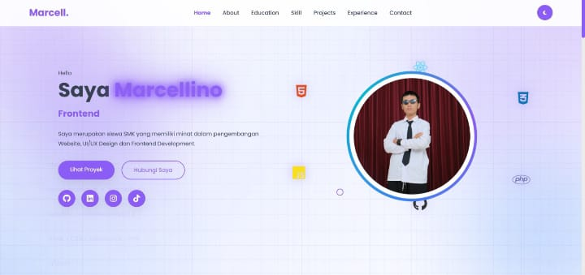

Sertifikat Praktik Kerja Lapangan
Menyelesaikan kegiatan PKL dan memperoleh pengalaman langsung di lingkungan kerja industri.
PT CNC Disain Nusantara Surabaya Office
// Halo, dunia digital
Saya merupakan siswa SMK yang memiliki minat dalam pengembangan Website, UI/UX Design dan Frontend Development.


Saya adalah siswa Rekayasa Perangkat Lunak (RPL) yang memiliki minat dalam bidang pengembangan perangkat lunak dan teknologi. Saya senang mempelajari bahasa pemrograman, membangun website, serta menciptakan solusi digital yang bermanfaat. Saya percaya bahwa belajar secara konsisten dan terus mengembangkan keterampilan adalah kunci untuk menjadi seorang programmer profesional.
Jurusan Rekayasa Perangkat Lunak. Saya mempelajari pengembangan website, pemrograman, dan teknologi serta terus mengembangkan keterampilan untuk membuat solusi digital yang inovatif.
Sejak SMP, saya mulai tertarik dengan dunia komputer dan teknologi. Dari sini muncul minat untuk menjadi profesional di bidang IT yang mampu menciptakan aplikasi bermanfaat.
Ketertarikan saya pada teknologi dimulai sejak Sekolah Dasar dan menjadi awal perjalanan untuk mempelajari bidang IT.

Website portfolio pribadi dengan desain modern, responsif, dan interaktif untuk menampilkan profil, keterampilan, pengalaman, pendidikan, dan proyek.
Lihat Detail
Web Report Before & After Service untuk mendokumentasikan kondisi mesin sebelum dan sesudah servis agar pelaporan menjadi lebih rapi dan terstruktur.
Lihat Detail
Desain grafis untuk kebutuhan promosi dan branding perusahaan dengan memperhatikan estetika, komposisi warna, dan identitas visual.
Lihat Detail
Aplikasi pengelolaan inventaris barang untuk membantu pencatatan, melihat, mengubah, dan mengelola data barang secara terstruktur.
Lihat Detail
Aplikasi penghitung Body Mass Index (BMI) berdasarkan tinggi dan berat badan, dengan kategori BMI serta pengembangan fitur aktivitas dan estimasi kalori.
Lihat Detail
Database inventori berfungsi mengelola aset organisasi melalui tabel barang (data stok) yang didukung oleh tabel kategori (jenis), lokasi (posisi gudang), dan kondisi (kelayakan pakai), serta diamankan oleh tabel users sebagai pengontrol hak akses pengguna.
Lihat Detail
Proyek antarmuka dompet digital yang dirancang untuk menampilkan saldo, transaksi, dan navigasi fitur keuangan dengan tampilan yang terstruktur.
Lihat Detail
Website anniversary dengan desain romantis, animasi interaktif, tipografi dekoratif, dan elemen visual personal untuk menciptakan pengalaman digital.
Lihat DetailCoba gunakan kata kunci atau kategori lainnya.
MILESTONES / 03 SELECTED
Pengalaman, pembelajaran, dan pencapaian yang menjadi bagian dari perjalanan saya.
Menyelesaikan kegiatan PKL dan memperoleh pengalaman langsung di lingkungan kerja industri.
Mengenal proses kerja, lingkungan industri, dan penerapan pengetahuan di dunia usaha.
Pencapaian olahraga yang menjadi pengingat pentingnya disiplin, latihan, dan semangat pantang menyerah.
Tampilan kartu ini adalah ringkasan portofolio. Foto/scan sertifikat asli dapat ditambahkan agar bisa dilihat langsung.
Praktik Kerja Lapangan di PT CNC Disain Nusantara dengan berpartisipasi dalam service motor servo, pengembangan Web Report Before & After Service, pembuatan desain grafis, serta perakitan simulator CNC. Pengalaman ini meningkatkan kemampuan teknis, pemrograman, kerja sama tim, dan problem solving.